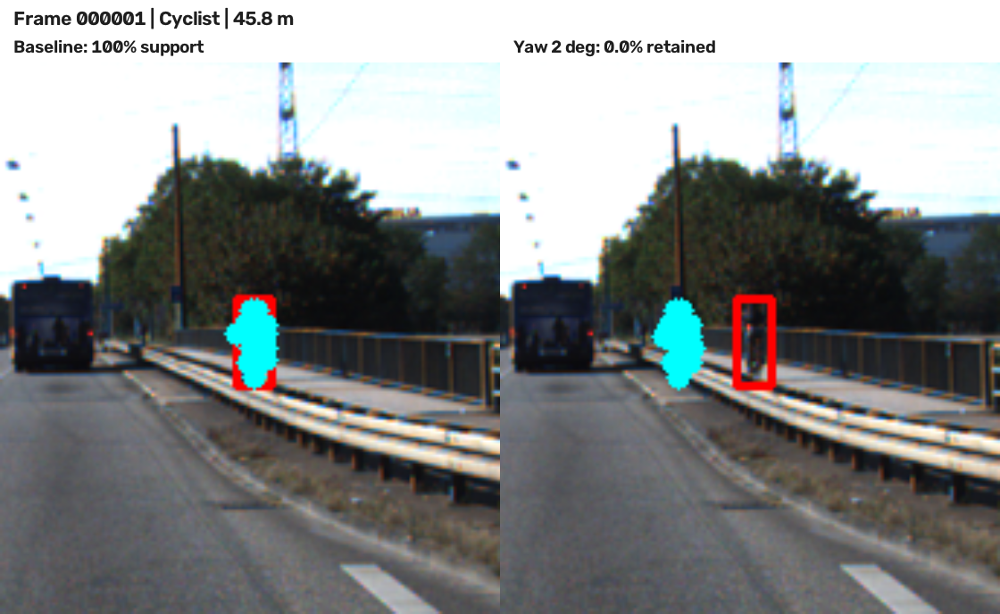

Topic A / LiDAR-camera projection QA
Calibration drift,
measured.
Độ lệch yaw nhỏ làm điểm LiDAR vẫn nằm trong ảnh nhưng rời khỏi vị trí đối tượng. Thử nghiệm trên 20 frame KITTI với 5 mức sai lệch calibration.
Giữ trong box · yaw 2°
84,49%
từ 100% ở calibration gốc
Suy giảm tại yaw 2°
−15,51 pp
vượt ngưỡng claim 10%
Lệch pixel trung vị
28,91 px
tại yaw drift 2°
Mẫu đánh giá
94
object · 35.363 điểm LiDAR
01 / EXPERIMENT
Độ nhạy theo yaw drift
Cùng tập điểm và object tại mọi mức
Điểm giữ trong box 2D
Yaw drift (degrees)Retention = điểm còn trong box / 35.363 điểm hỗ trợ
Mức đang xem
Chọn một mức yaw để đọc kết quả tương ứng.
Yaw drift2°
0°0,5°1°2°3°
Điểm trong FOV97,76%Điểm trong box 2D84,49%Lệch pixel trung vị28,91 px
Mẫu ban đầu được chọn theo box 3D và phép chiếu ở calibration gốc. Mốc 100% là tỷ lệ giữ mẫu, không phải độ chính xác tuyệt đối của calibration.
DATA / 05 LEVELS
Chọn hàng để cập nhật biểu đồ
| Yaw | Trong FOV | Trong box 2D | Điểm giữ lại | Lệch trung vị |
|---|
Nguồn: results/yaw_perturb_sweep.csv · 20 frame KITTI mini · 94 object ở 5–50 m.
02 / MOTION STUDY
Projection qua từng mức lệch
15 trạng thái · 3 cảnh · 5 mức yaw

03 / EVIDENCE
Overlay trên KITTI
Nhấn vào ảnh để xem kích thước đầy đủ
04 / FAILURE CASE
Vật nhỏ ở xa mất toàn bộ điểm hỗ trợ
Geometry · frame 000001

GEOMETRY FAILURE
Cyclist · 45,84 m
18 / 18 → 0 / 18Ở calibration gốc, cả 18 điểm LiDAR hỗ trợ nằm trong box 2D. Khi yaw lệch 2°, không còn điểm nào trong box đỏ dù chúng vẫn xuất hiện trên ảnh. Metric chỉ đếm điểm nằm trong FOV sẽ bỏ sót lỗi định vị này.